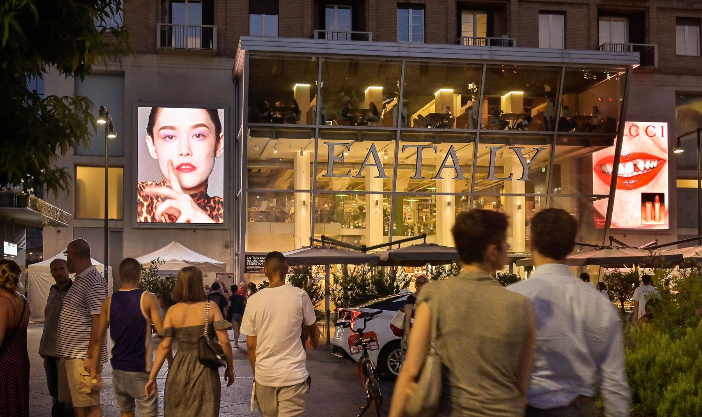
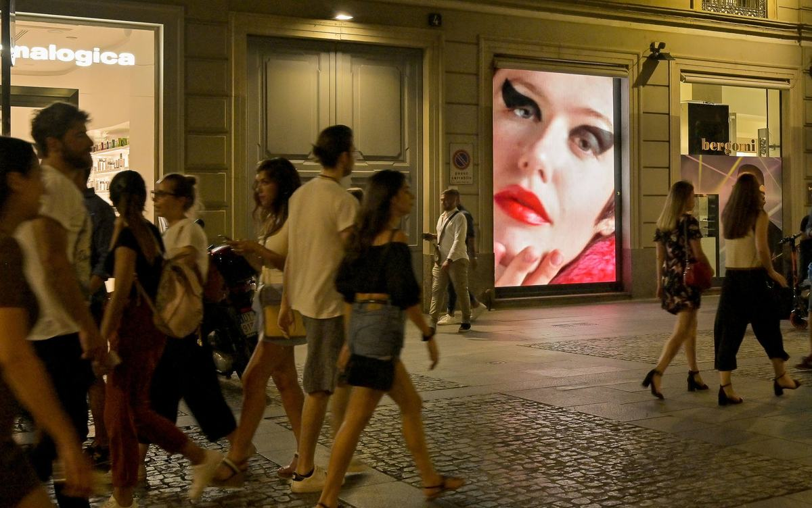
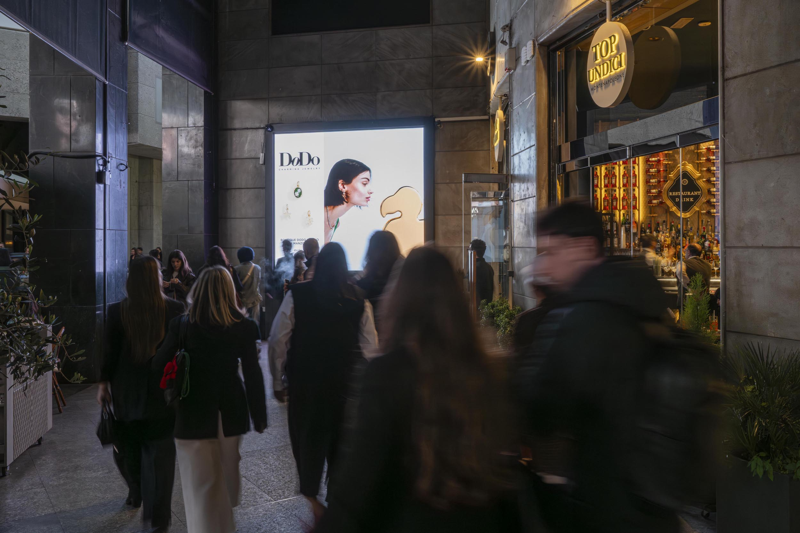
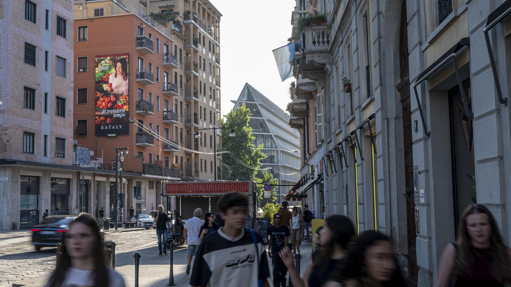
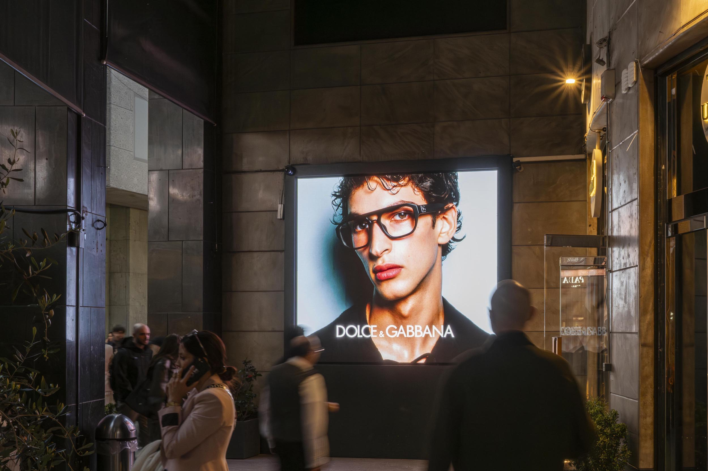

Maxi affissioni & murales
Grandi formati digitali e tradizionali su pareti cieche e ponteggi, nelle posizioni a più alta visibilità del centro città.

Concessionaria OOH · DOOH · Murales
Da trent'anni valorizziamo gli spazi urbani più prestigiosi d'Italia: maxi affissioni digitali e tradizionali, circuiti di maxischermi LED e murales pubblicitari, con progetti che finanziano il restauro del patrimonio storico.
Richiedi disponibilitàChi siamo
B.S. Urban Adv è una concessionaria di spazi pubblicitari outdoor, digital out of home e murales, operativa sul territorio italiano principalmente tra Milano e Roma. Sviluppiamo progetti su misura per brand e centri media, dagli impianti permanenti alle grandi coperture evento.
Grandi formati digitali e tradizionali su pareti cieche e ponteggi, nelle posizioni a più alta visibilità del centro città.
Maxischermi full LED di ultima generazione nei distretti dello shopping e della movida, con pianificazione flessibile per campagne premium.
Coperture pubblicitarie in occasione di restauri di palazzi storici, monumenti e chiese: la campagna finanzia la conservazione del patrimonio.
Il circuito Milano
Una selezione degli impianti permanenti del circuito milanese, da Porta Nuova al Quadrilatero della moda fino ai Navigli.

60 mq complessivi affacciati su Eataly e Porta Nuova. 500.000 passaggi giornalieri. (fonte: polizia urbana)

250.000 passaggi giornalieri nel centro della movida di Corso Garibaldi, ricco di locali affollati durante tutta la giornata.

Porta di accesso alla via dello shopping più prestigiosa d'Italia. 250.000 passaggi giornalieri. (fonte: associazione negozianti di Via Monte Napoleone)

La via della movida per eccellenza, viva a tutte le ore del giorno e della notte.

Impianto in Piazza XXV Aprile, fronte Eataly, all'imbocco di Corso Como — una delle arterie più frequentate della movida milanese.

Murales pubblicitario nel cuore di Corso Garibaldi, una delle arterie più frequentate della movida milanese, tra Porta Garibaldi e i quartieri del design.
Murales pubblicitario in Corso Garibaldi 62, posizione di elevata visibilità sull'asse pedonale che collega Brera a Porta Garibaldi.
L'opportunità
Il digital out of home è tra i canali pubblicitari a più rapida crescita al mondo: tecnologie LED di nuova generazione e pianificazione data-driven stanno ridefinendo la comunicazione urbana.
Progetti & restauri
Guidiamo progetti OOH e DOOH premium in tutta Italia, coniugando innovazione commerciale e impatto civico: i nostri impianti finanziano la conservazione del patrimonio storico.
Finanziato e coordinato il restauro: un'iniziativa di riferimento nella rigenerazione del patrimonio storico milanese.
Supervisione del restauro, consolidando il ruolo dell'azienda nella conservazione finanziata dalla pubblicità.
Realizzato il primo maxischermo digitale da 400 mq d'Italia: un nuovo standard per il DOOH premium.
Campagne di restauro finanziato dalla pubblicità per la Chiesa di Santa Maria delle Grazie al Naviglio e la Chiesa del Carmine.
Presenza internazionale
Contatti
P. IVA 12545530151
